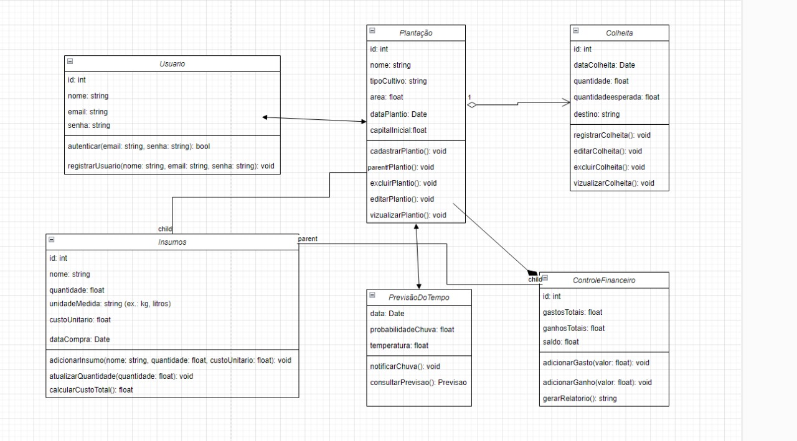

CultivaTech - TIWAZ
1. Introdução
1.1 Propósito
Este documento apresenta a arquitetura do sistema desenvolvido para o aplicativo mobile CultivaTech, destinado a otimizar o gerenciamento de plantações. O objetivo do documento é apresentar uma descrição detalhada das funcionalidades, integrações e especificações técnicas do sistema. Ele fornece uma visão completa para os desenvolvedores, testadores e outros stakeholders, com o intuito de facilitar o entendimento do projeto. O sistema foi projetado com o intuito de garantir uma solução eficiente, escalável e de fácil manutenção, alinhado às necessidades dos produtores rurais.
1.2 Escopo
O CultivaTech será uma aplicação mobile desenvolvida com tecnologias modernas como React Native e Node.js. O objetivo principal é fornecer uma ferramenta prática e acessível para pequenos e médios agricultores, permitindo o gerenciamento de plantações, controle de colheitas, monitoramento de insumos e controle financeiro através de relatórios com dados específicos de gastos e ganhos de cada plantação cadastrada. Além disso, o aplicativo oferecerá previsões meteorológicas detalhadas e notificações antecipadas sobre chuvas e secas, ajudando na tomada de decisões em campo.
O CultivaTech terá suporte em dispositivos Android e foi projetado para funcionar em áreas com baixa conectividade, permitindo o uso offline com sincronização de dados quando houver conexão disponível.
O escopo detalhado do projeto reflete a necessidade de atender a demandas específicas do setor agrícola, promovendo a centralização de informações e a tomada de decisão informada pelos usuários. Isso contribui para uma melhor organização e aumento da eficiência das atividades no campo. Demais detalhes com relação ao escopo do projeto encontram-se no documento “Documento de Visão - Tiwaz”.
2. Representação Arquitetural
2.1 Definições
O sistema seguirá uma arquitetura monolítica modular. Nessa abordagem, o sistema será estruturado como uma única aplicação, porém organizado em módulos independentes que encapsulam funcionalidades específicas e bem definidas. Cada módulo será responsável por uma parte distinta do sistema, de forma a garantir uma organização clara e uma separação lógica das responsabilidades dentro do projeto.
2.2 Justifique sua escolha
A escolha pela arquitetura monolítica modular para o desenvolvimento do sistema proposto foi justificada com base nos documentos Visão do Produto e Declaração de Escopo do Produto, levando em conta as necessidades do cliente, o contexto tecnológico e as funcionalidades oferecidas pelo produto. Dentre esses fatores estão:
1. Suporte ao Funcionamento Offline
- A arquitetura monolítica facilita o gerenciamento de dados offline, crucial para o contexto rural onde a conectividade é limitada.
- Permite um armazenamento local eficiente e coeso, com sincronização simplificada quando há conexão disponível.
- Reduz a complexidade de manter consistência de dados entre diferentes serviços.
2. Eficiência em Recursos
- Consumo otimizado de recursos do dispositivo, essencial para dispositivos Android de entrada.
- Menor overhead de comunicação por não necessitar de múltiplos serviços.
- Melhor performance em operações que envolvem múltiplos módulos.
3. Consistência e Manutenibilidade
- A modularização permite organização clara do código, mantendo a coesão.
- Facilita a manutenção através de fronteiras bem definidas entre módulos.
- Permite evolução independente dos módulos sem aumentar a complexidade operacional.
4. Considerações de Desenvolvimento
- Stack tecnológica unificada (React Native e Node.js) simplifica o desenvolvimento.
- Reduz a curva de aprendizado para a equipe de desenvolvimento.
- Facilita a implementação de testes integrados.
5. Escalabilidade Controlada
- Adequada para a escala inicial prevista do projeto.
- Permite crescimento sustentável mantendo a simplicidade operacional.
6. Alinhamento com o Contexto do Usuário
- Adequada para o público-alvo de pequenos e médios agricultores.
- Simplifica o processo de instalação e atualização.
- Garante funcionamento confiável em áreas rurais com conectividade limitada.
7. Custo-Benefício
- Menor custo de infraestrutura inicial.
- Redução de complexidade operacional.
- Simplificação do processo de manutenção e suporte.
2.3 Detalhamento
A escolha pela arquitetura de monolito modular para o desenvolvimento do aplicativo foi motivada pela necessidade de garantir um sistema eficiente, organizado e de fácil manutenção, ao mesmo tempo em que possibilita a escalabilidade futura. A abordagem de monolito modular permite que o sistema seja estruturado em módulos bem definidos, com responsabilidades claras e comunicação interna bem estabelecida, promovendo uma separação lógica que facilita a evolução e manutenção do código.
2.3.1 Características Arquiteturais:
- Organização Modular: Divisão em módulos com responsabilidades claras, comunicação via interfaces bem definidas e encapsulamento de domínios.
- Comunicação Interna: Chamadas diretas entre módulos sem latência de rede, com baixo acoplamento lógico.
- Implantação Única: O sistema é implantado como uma unidade única, simplificando operações.
- Desempenho: Ausência de overhead de rede e compartilhamento eficiente de recursos.
- Evolução Modular: Facilita a transição para microsserviços ao extrair módulos, se necessário.
- Manutenção e Testes: Testes isolados por módulo e facilidade de depuração centralizada.
2.3.2 Descrição da Figura Esquemática:
O esquema da arquitetura monolito modular do CultivaTech está estruturado da seguinte forma:
- Interface Mobile:
- ReactNative UI: Camada de apresentação responsável pela interface do usuário, implementada em React Native para garantir uma experiência nativa em dispositivos Android.
-
StorageLocal: Componente responsável pelo armazenamento local temporário de dados da interface.
-
Módulos do Sistema: O sistema é dividido em cinco módulos principais, cada um encapsulando funcionalidades específicas:
- Módulo de Plantação: Gerenciamento de cadastro de plantações, sistema de monitoramento, controle dos estados da plantação.
- Módulo de Colheita: Registro e acompanhamento de colheitas.
- Módulo de Insumos: Registro e acompanhamento de utilização.
- Módulo Financeiro: Controle de gastos e receitas, geração de relatórios financeiros.
-
Módulo Clima: Integração com previsão meteorológica, sistema de alertas climáticos.
-
Core do Sistema:
- Gerenciador Offline: Controla o funcionamento do aplicativo sem conectividade.
- Autenticação e Autorização: Gerência segurança e controle de acesso.
- Sistema de Notificações: Centraliza o envio e gerenciamento de notificações.
-
Gerenciador de Sincronização: Responsável pela sincronização de dados entre o dispositivo e a nuvem.
-
Camada de Dados:
-
Banco Local (SQLite): Armazenamento persistente local que permite o funcionamento offline do aplicativo.
-
Serviços Externos: Integrações com sistemas externos necessários para o funcionamento completo:
- API de Previsão do Tempo: Fornece dados meteorológicos atualizados.
2.3.3 Figura Esquemática:
2.3.4 Benefícios da Arquitetura:
- Manutenção Simplificada: A divisão modular facilita a localização de problemas e implementação de melhorias.
- Escalabilidade: A estrutura modular permite adicionar novas funcionalidades sem impactar os componentes existentes.
- Consistência de Dados: O uso de um banco de dados centralizado assegura que todas as informações estejam sincronizadas.
- Flexibilidade: O suporte offline permite o uso em regiões remotas, ampliando a utilidade do aplicativo.
2.4 Metas e Restrições Arquiteturais
Desempenho:
- O sistema deve ser capaz de processar 95% das consultas em até 2 segundos.
- O tempo de resposta para requisições de API não deve ultrapassar 500ms.
Manutenibilidade:
- O código deve seguir o padrão de Monólito Modular para garantir que seja simples, fácil de manter e entender.
- O sistema deve ser modular e permitir a substituição ou atualização de componentes sem impacto significativo em outros módulos.
- O tempo médio para corrigir falhas críticas deve ser inferior a 4 horas.
Usabilidade:
- A interface do usuário deve ser intuitiva, com um tempo de aprendizado inferior a 15 minutos para novos usuários.
Infraestrutura:
- O sistema deve manter banco de dados em SQLite.
- A base de dados não deve exceder 1GB de dados no seu primeiro ano de operação.
Compatibilidade:
- O sistema deve ser capaz de rodar em dispositivos móveis com sistemas operacionais iOS e Android.
Licenciamento e Custos:
- A solução deve ser desenvolvida usando software de código aberto sempre que possível para minimizar os custos de licenciamento.
- Para backup, o sistema deve utilizar o armazenamento do Google Drive para poupar custos.
2.5 Visão de Casos de Uso (Escopo do Produto)
O sistema tem como objetivo fornecer aos pequenos e médios agricultores uma ferramenta prática para gerenciar suas plantações, controlar colheitas, monitorar insumos e finanças, além de fornecer previsões meteorológicas e alertas climáticos. O agricultor pode cadastrar suas plantações, registrar colheitas e controlar o uso de insumos, como fertilizantes e pesticidas, incluindo custos. O controle financeiro é realizado com o registro de receitas e despesas, gerando relatórios detalhados. O sistema oferece previsões meteorológicas para otimizar o planejamento das atividades no campo e envia notificações sobre condições climáticas extremas, como chuvas e secas. Relatórios personalizados ajudam o agricultor a analisar o desempenho financeiro e produtivo, e o controle de inventário de insumos garante o planejamento eficiente das compras.
2.6 Visão Lógica
2.6.1 Módulos e Interfaces
O sistema apresenta uma tela inicial com os seguintes módulos numerados, onde cada módulo será apresentado como um botão que redireciona o usuário para novas interfaces com suas respectivas funcionalidades:
1. Gestão de Plantios:
- Lista de Plantações: A interface inicial do módulo de Gestão de Plantios onde é apresentado uma lista das plantações cadastradas.
- Cadastro de Plantação: Apresenta o formulário de cadastro de plantação.
- Editar Plantação: Interface acessível caso haja uma plantação cadastrada no sistema.
- Concluir Plantação: Pop-up de confirmação de conclusão de plantação.
- Excluir Plantação: Pop-up de confirmação de exclusão de plantação.
2. Gestão de Colheita:
- Listar Colheitas: Interface inicial do módulo de Gestão de Colheita.
- Cadastrar Colheita: Formulário de cadastro de colheita.
- Editar Colheita: Formulário de edição da colheita selecionada.
- Excluir Colheita: Pop-up de confirmação de exclusão de colheita.
3. Previsão Meteorológica:
- Previsão do Tempo: Apresenta a previsão do tempo de até 7 dias à frente.
4. Controle Financeiro:
- Listar Custos: Tela inicial do módulo de Controle Financeiro.
- Cadastrar Custo: Formulário de cadastro de custo.
- Editar Custo: Formulário de edição de custo.
- Excluir Custo: Pop-up de confirmação de exclusão de custo.
5. Gestão de Insumos:
- Listar Insumos: Interface inicial do módulo de Gestão de Insumos.
- Cadastrar Insumo: Formulário de cadastro de insumo.
- Editar Insumo: Formulário de edição do insumo selecionado.
- Excluir Insumo: Pop-up de confirmação de exclusão de insumo.
2.6.2 Diagrama de Estados da Aplicação
Odiagrama de estados da aplicação representando as diferentes fases da aplicação e como ocorrem essas mudanças de fase, neste diagrama, representamos as fases da aplicação com o estado que cada módulo se relaciona com suas funcionalidades. Como fase inicial temos a tela inicial do aplicativo, em seguida temos a condição de escolha de módulos e , em cada módulo, temos as condições de escolha de funcionalidades.
2.6.3 Diagrama de Classes da Aplicação
Odiagrama de classes é usado para modelar e organizar as estruturas de um sistema orientado a objetos. Ele mostra as classes, atributos, métodos e seus relacionamentos, ajudando a planejar, documentar e comunicar o design do sistema. Facilita a implementação, manutenção e evolução do software. No caso do CultivaTech, ele representa funcionalidades como plantação, insumos e controle financeiro, organizando a lógica do aplicativo.

2.7 Visão de Implementação
Introdução
A aplicação é organizada em uma arquitetura em camadas que divide a interface de usuário, a lógica de negócios e a comunicação com o banco de dados. Essa estrutura facilita a separação de responsabilidades e o desenvolvimento colaborativo da equipe.
Camada de Apresentação
A camada de apresentação é responsável pela interface gráfica da aplicação, implementada com React Native, uma tecnologia amplamente adotada para criação de aplicativos móveis.
Estrutura da camada de apresentação:
- Screens: Páginas principais do aplicativo, como tela inicial, visualização de dados, configurações e gerenciamento.
- Components: Elementos reutilizáveis e estilizados, como botões, cartões, inputs e modais, garantindo consistência visual e desenvolvimento ágil.
- Navigation: A navegação entre telas será implementada utilizando React Navigation.
Lógica de Negócios e Regras de Negócios
Explicar os pacotes responsáveis por processar as informações e garantir que as regras de negócio sejam aplicadas corretamente. A lógica será implementada no backend, utilizando Node.js, conforme detalhado no diagrama de pacotes.
Comunicação com o Banco de Dados
A comunicação será feita utilizando SQLite, conforme detalhado no diagrama de pacotes.
2.8 Visão de Implantação
Infraestrutura de Hardware e Tecnologias:
O desenvolvimento do aplicativo CultivaTech será feito através de Sprints, com duração média de uma semana. Cada Sprint será implantada por uma dupla de desenvolvedores, de forma local, ou seja, cada desenvolvedor utilizará sua própria máquina.
Para integrar cada Sprint e código, será utilizado o GitHub, uma plataforma consolidada e que permitirá a organização do projeto.
Os testes serão feitos através do Android Studio, que emula um ambiente mobile. Alguns dos desenvolvedores possuem um conhecimento prévio sobre a ferramenta, motivando a escolha.
Tecnologias Front-end:
- JavaScript: Linguagem de programação escolhida por ser aplicável tanto no front-end quanto no back-end, simplificando o desenvolvimento do código.
- React Native: Framework comumente utilizado em aplicações mobile, facilitando a busca de soluções para possíveis problemas.
- Expo: Ferramenta que cria ambientes mobile e oferece APIs integradas, dispensando a necessidade de serem criadas manualmente.
Tecnologias Back-end:
- JavaScript: Linguagem de programação.
- Node.js: Ambiente de execução escolhido pela alta performance e também, pelo vasto material disponibilizado na internet, facilitando a resolução de possíveis problemas.
Banco de Dados:
- SQLite: Permite o salvamento de dados no próprio dispositivo mobile, dispensando a necessidade de um servidor centralizado.
2.9 Restrições Adicionais
O sistema CultivaTech está sujeito a um conjunto de restrições adicionais para garantir alinhamento com os requisitos negociais e padrões de qualidade. Estas restrições foram definidas considerando as características do setor agrícola e as necessidades dos usuários. Abaixo, detalhamos e justificamos essas restrições.
2.9.1 Restrições Técnicas:
- Plataforma de Desenvolvimento:
- O aplicativo deve ser desenvolvido utilizando React Native para garantir compatibilidade com dispositivos Android.
-
O código deve ser escrito em JavaScript ou TypeScript.
-
Armazenamento de Dados:
- O aplicativo deve ser capaz de funcionar offline e sincronizar os dados quando uma conexão de rede estiver disponível.
- Utilização de uma base de dados local como SQLite para armazenamento de dados offline.
2.9.2 Restrições de Segurança:
- Proteção de Dados:
- Todos os dados sensíveis, como informações sobre as plantações e dados coletados dos sensores, devem ser criptografados em trânsito e em repouso.
-
Implementação de autenticação segura para garantir que apenas usuários autorizados possam acessar o aplicativo e seus dados.
-
Conformidade:
- O aplicativo deve estar em conformidade com as regulamentações de proteção de dados aplicáveis, como a LGPD (Lei Geral de Proteção de Dados) no Brasil.
2.9.3 Restrições de Desempenho:
- Tempo de Resposta:
- O aplicativo deve ter um tempo de resposta inferior a 2 segundos para todas as operações críticas, como salvar dados de plantação ou gerar relatórios.
2.9.4 Restrições de Compatibilidade:
- Dispositivos e Sistemas Operacionais:
- O aplicativo deve ser compatível com as versões mais recentes dos sistemas operacionais Android, além das versões anteriores de até dois anos atrás.
-
Deve garantir uma experiência de usuário consistente em diferentes tamanhos de tela e resoluções.
-
Integração com Serviços de Terceiros:
- O aplicativo deve ser capaz de integrar-se com serviços de terceiros, como APIs de clima, para obter informações meteorológicas que possam impactar as plantações.
2.9.5 Restrições de Manutenção e Evolução:
- Facilidade de Manutenção:
-
O código deve ser bem documentado e seguir as melhores práticas de desenvolvimento para facilitar a manutenção e futuras atualizações.
-
Evolução:
- A arquitetura do aplicativo deve ser modular para permitir a adição de novas funcionalidades sem a necessidade de grandes refatorações.
2.9.6 Restrições Legais e Regulatórias:
- Regulamentações Agrícolas:
-
O aplicativo deve aderir às regulamentações agrícolas locais e nacionais, fornecendo funcionalidades que ajudem os agricultores a cumprir tais regulamentações.
-
Licenciamento de Software:
- Todos os componentes de software de terceiros utilizados no desenvolvimento do aplicativo devem ser devidamente licenciados e compatíveis com a licença do projeto.
3 Bibliografia
- VALENTE, Marco Tulio. Engenharia de Software Moderna: Princípios e Práticas para Desenvolvimento de Software com Produtividade. 1. ed. [S.l.]: Independente, 2020. 395 p. ISBN 978-65-00-01950-6.
- RODRIGUES, Abel. Arquitetura monolítica modular: organização modular de pastas. Disponível em: https://medium.com/@abel.ncm/arquitetura-monol%C3%ADtica-modular-estrutura%C3%A7%C3%A3o-escal%C3%A1vel-do-projecto-8888ed51f53b. Acesso em: 18 dez. 2024.
- NUNES, Bruno. Como definir uma boa Arquitetura de Software e por que é tão importante. Disponível em: https://www.iftl.education/tech-hub/artigos/como-definir-uma-boa-arquitetura-de-software-e-por-que-e-tao-importante. Acesso em: 18 dez. 2024.
- PRESSMAN, Roger S. Engenharia de Software: uma abordagem profissional. 7. ed. Porto Alegre: AMGH, 2011.
Histórico de Revisão
| Data | Versão | Descrição | Autor(es) |
|---|---|---|---|
| 13/12/2024 | 1.0 | Criação do Documento | João Pedro Ferreira Moraes |
| 15/12/2024 | 1.1 | Criação e edição do tópico 1 (Introdução) e dos sub-tópicos 1.1 (Propósito) e 1.2 (Escopo). | João Pedro Ferreira Moraes |
| 17/12/2024 | 1.2 | Criação e edição do Tópico 2 (Representação Arquitetural) e dos sub-tópicos 2.1 (Definições), 2.3 (Detalhamento), 2.9 (Restrições adicionais). | João Pedro Ferreira Moraes, Mateus de Sousa Soares, Felipe Henrique Oliveira Sousa, Thales Germano Vargas Lima, Cauã Reis de Freitas, Luís Felipe de Souza Braga, Davi Emanuel Ribeiro de Oliveira |
| 18/12/2024 | 1.3 | Criação e edição dos sub-tópicos 2.2 (Justifique sua escolha), 2.4 (Metas e restrições arquiteturais), 2.5 (Visão de Casos de uso (escopo do produto)), 2.6 (Visão lógica), 2.7 (Visão de Implementação), 2.8 (Visão de Implantação). Criação e Edição do Tópico 3. | João Pedro Ferreira Moraes, Mateus de Sousa Soares, Felipe Henrique Oliveira Sousa, Thales Germano Vargas Lima, Luís Felipe de Souza Braga |
| 18/12/2024 | 1.4 | Formatação do Documento | João Pedro Ferreira Moraes |
| 19/12/2024 | 1.5 | Documento adicionado no GitHub | João Pedro Ferreira Moraes |
| 30/01/2025 | 1.6 | Revisao do Documento com base do andamento do projeto | João Pedro Ferreira Moraes |
Autores
| Matrícula | Nome | Descrição do Papel Assumido na Equipe | % de Contribuição ao Trabalho |
|---|---|---|---|
| 231029725 | Mateus de Sousa Soares | Definição de Visão Lógica do Sistema com os tópicos 2.6.1 Módulos e Interfaces e 2.6.2 Diagrama de Estados da Aplicação | 20% |
| 231028989 | João Pedro Ferreira Moraes | Tópico 1 (Introdução), 2.3 (Detalhamento), Complemento do Tópico 2.2 (Justifique), Diagrama de Classes topico 2.6.3 e Formatação | 20% |
| 231012100 | Felipe Henrique Oliveira Sousa | Tópico 2.2 | 10% |
| 202016865 | Luís Felipe de Souza Braga | Tópico 2.4 e 2.5 | 15% |
| 202017147 | Thales Germano Vargas Lima | Tópico 2.7 | 10% |
| 231011972 | Cauã Reis de Freitas | Tópico 2.8 | 10% |
| 231034073 | Artur Cardoso da Silva | Tópico 2.1 | 5% |
| 211031583 | André Lopes | 0% | |
| 231026616 | Davi Emanuel Ribeiro de Oliveira | Tópico 2.9 | 10% |